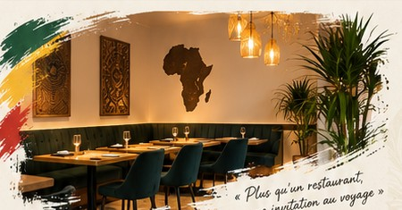
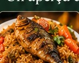
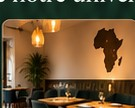
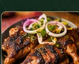
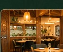
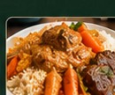
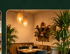

Authentique
Une carte construite autour des incontournables sénégalais.
Thieb, mafé, yassa, bissap… une cuisine franche, chaleureuse et faite pour être partagée.
Chez O’Thiéb, les plats emblématiques du Sénégal prennent place au centre de la table : du riz, des sauces longuement travaillées, des épices, des recettes familières et cette générosité qui transforme un repas en moment partagé.

Une carte construite autour des incontournables sénégalais.
Des assiettes faites pour rassasier autant que pour faire voyager.
Un lieu sans chichi où l’on vient d’abord pour bien manger.
Des assiettes généreuses et un lieu chaleureux, à découvrir sur place.






O’Thiéb garde l’essentiel : une cuisine qui a du caractère, une adresse facile d’accès et une ambiance simple. Vous venez comme vous êtes, vous repartez avec le goût du Sénégal en tête.
Voir les horaires →